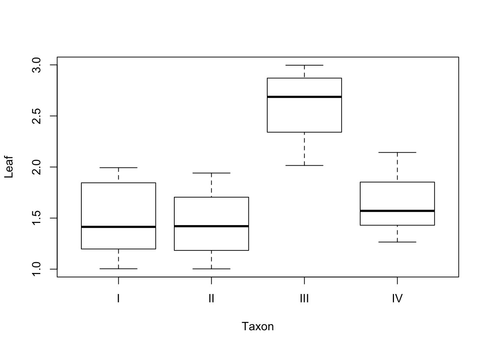
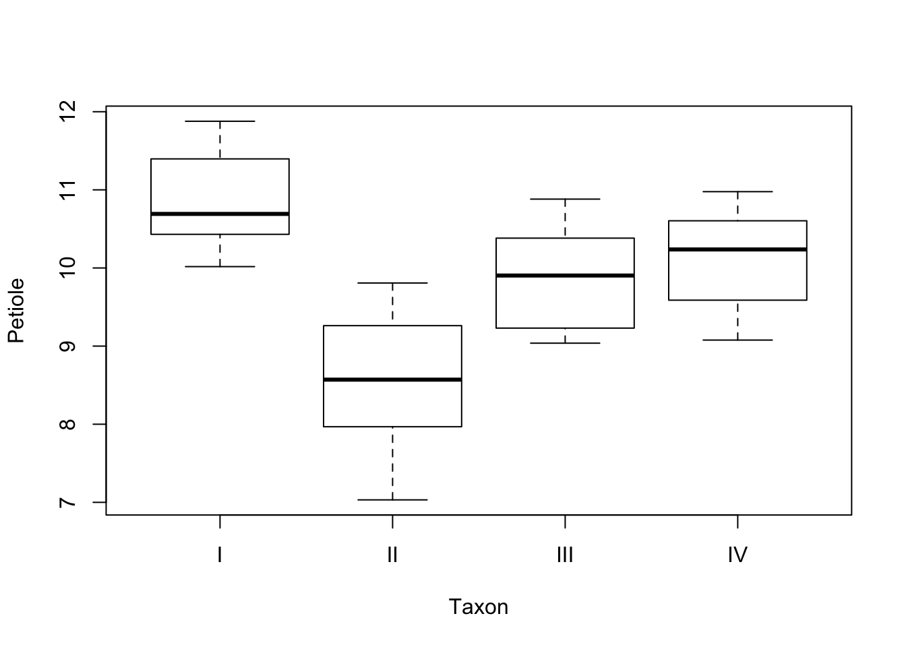

Exercise 8
Ex-1: Count data
Consider the plant species count data used in lesson 10.
- Redo the analysis using the
BiomassandpHvariables as predictors for species counts (as in slide 9). Find separate expressions for the estimated linear predictors \(\hat{\eta}_j\) for eachpH-level \(j\) = “low”,“medium”,“high”. Also find the estimated expected count forBiomass = 2andpH = high.
First we fit the model:
Estimate Std. Error z value
(Intercept) 3.3217576 0.03883244 85.54079
Biomass -0.1275586 0.01014076 -12.57880
pH(high) 0.5271844 0.03400435 15.50344
pH(low) -0.6092096 0.04124607 -14.77012
Pr(>|z|)
(Intercept) 0.000000000000000000000000000000000000000000000000000000000
Biomass 0.000000000000000000000000000000000002761826998525636628778
pH(high) 0.000000000000000000000000000000000000000000000000000003288
pH(low) 0.000000000000000000000000000000000000000000000000228291575Then the estimated linear predictors are:
\[\eta_\text{low} = 3.85 - 0.128\cdot \text{Biomass} - 1.14\]
\[\eta_\text{medium} = 3.85 - 0.128\cdot \text{Biomass} - 0.45\]
\[\eta_\text{high} = 3.85 - 0.128\cdot \text{Biomass}\]
For Biomass = 2 and pH = high the estimated expected count is:
\[\hat{\lambda} = \exp(3.85 - 0.128\cdot 2) = 36.4\]
Alternatively we could compute this in R by:
1
36.37293 - Fit the same model as in a. using the quasipoisson approach. Is there any evidence of overdisperion?
Call:
glm(formula = Species ~ Biomass + pH, family = quasipoisson,
data = species)
Deviance Residuals:
Min 1Q Median 3Q Max
-2.5959 -0.6989 -0.0737 0.6647 3.5604
Coefficients:
Estimate Std. Error t value Pr(>|t|)
(Intercept) 3.32176 0.04085 81.31 <0.0000000000000002 ***
Biomass -0.12756 0.01067 -11.96 <0.0000000000000002 ***
pH(high) 0.52718 0.03577 14.74 <0.0000000000000002 ***
pH(low) -0.60921 0.04339 -14.04 <0.0000000000000002 ***
---
Signif. codes: 0 '***' 0.001 '**' 0.01 '*' 0.05 '.' 0.1 ' ' 1
(Dispersion parameter for quasipoisson family taken to be 1.106751)
Null deviance: 452.346 on 89 degrees of freedom
Residual deviance: 99.242 on 86 degrees of freedom
AIC: NA
Number of Fisher Scoring iterations: 4The dispersion parameter is only marginally larger than 1. We conclude that over-disperion is not a problem here.
- Extend the model from a. by including an interaction between Biomass and pH. Test the significance of the interaction. Is there a significant difference between pH=“high” and pH=“medium” with regard to the effect of Biomass to the species count?
Call:
glm(formula = Species ~ Biomass * pH, family = poisson, data = species)
Deviance Residuals:
Min 1Q Median 3Q Max
-2.4978 -0.7485 -0.0402 0.5575 3.2297
Coefficients:
Estimate Std. Error z value Pr(>|z|)
(Intercept) 3.38578 0.04121 82.159 < 0.0000000000000002 ***
Biomass -0.16944 0.01483 -11.426 < 0.0000000000000002 ***
pH(high) 0.38234 0.05441 7.027 0.00000000000211 ***
pH(low) -0.43323 0.06294 -6.883 0.00000000000585 ***
Biomass:pH(high) 0.06231 0.01649 3.779 0.000158 ***
Biomass:pH(low) -0.09272 0.02650 -3.499 0.000466 ***
---
Signif. codes: 0 '***' 0.001 '**' 0.01 '*' 0.05 '.' 0.1 ' ' 1
(Dispersion parameter for poisson family taken to be 1)
Null deviance: 452.346 on 89 degrees of freedom
Residual deviance: 83.201 on 84 degrees of freedom
AIC: 514.39
Number of Fisher Scoring iterations: 4Analysis of Deviance Table
Model 1: Species ~ Biomass + pH
Model 2: Species ~ Biomass * pH
Resid. Df Resid. Dev Df Deviance Pr(>Chi)
1 86 99.242
2 84 83.201 2 16.04 0.0003288 ***
---
Signif. codes: 0 '***' 0.001 '**' 0.01 '*' 0.05 '.' 0.1 ' ' 1The interaction term is highly significant with a p-value of 0.00033. The Wald tests (the approximate normal test) given in the summary output gave a p-value of 0.167 for the term Biomass:pHmid which really is the contrast between interactions Biomass:pHhighand Biomass:pHmedium since pHhigh is the reference level in this model. The relatively large p-value says that there is no evidence that Biomass has different effect on counts for these two pH-levels.
- Optional R-programming exercise for those interested: Reproduce the graph on slide 3 of lesson 10 and add curves visualizing the estimated expected counts as a function of Biomass and with separate curves for the pH-levels. The curves should be based on the fitted model with interaction between Biomass and pH-level.
Answers from students
Denis Tafintsev

Camilo Esteban Silva Chiang


Ex-2: Multinomial data
We return to the taxonomy data used in the lecture on cluster analysis. In the file taxonomy.Rdata you find seven variables measured on plants from four different taxa. We will use multinomial regression as means for classification of taxa. A code file for performing cross-validation of classifications based on multinomial regression is found in the file CV.class.multinom.R on Fronter. Throughout this exercise you may need to increase the number of iterations used in the Maximum Likelihood estimation procedure. The default is 100 iterations. For example, in exercise a. maxit = 200 should suffice.
- Use multinomial regression to model the probabilities of the various taxa as a function of the variable
Sepal. Save the model as an object calledmod1.multi. Use summary to display the results.
# weights: 12 (6 variable)
initial value 166.355323
iter 10 value 98.990404
iter 20 value 98.141917
iter 30 value 98.100674
iter 40 value 98.097605
iter 50 value 98.096106
iter 60 value 98.095900
iter 70 value 98.095310
iter 80 value 98.095057
iter 90 value 98.094619
iter 100 value 98.092238
final value 98.092209
convergedCall:
multinom(formula = Taxon ~ Sepal, data = taxonomy, maxit = 200)
Coefficients:
(Intercept) Sepal
II 1.491219 -0.5931766
III 2.859739 -1.1475571
IV -48.036300 13.7378995
Std. Errors:
(Intercept) Sepal
II 2.313428 0.9143381
III 2.317589 0.9241534
IV 84.933961 24.4393773
Residual Deviance: 196.1844
AIC: 208.1844 - What are the estimated linear predictors \(\eta_j\) for each of the four taxa, \(j=1,2,3,4\)?
First we extract the estimated regression coefficients. Remember that for the reference level taxon the regression coefficients are assumed equal to zero. We therefore add a row of zeros for this taxon (here taxon = 1).
(Intercept) Sepal
I 0.000000 0.0000000
II 1.491219 -0.5931766
III 2.859739 -1.1475571
IV -48.036300 13.7378995This gives the following linear predictors:
\[\eta_1 = 0 + 0\cdot \text{Sepal} = 0\]
\[\eta_2 = 1.49 - 0.593\cdot \text{Sepal}\]
\[\eta_3 = 2.86 - 1.15\cdot \text{Sepal}\]
\[\eta_4 = -48.0 + 13.7\cdot \text{Sepal}\]
- What is the most probable taxon according to this model for a plant with average value of
Sepal? (Hint: If your coefficients are stored in a matrix calledcoyou may compute the probabilities for each taxon by using the codeprobs <- exp(co[,1]+co[,2]*x)/sum(exp(co[,1]+co[,2]*x))wherexis the value of interest forSepal.
I II III IV
0.4334551063 0.3245568634 0.2415048039 0.0004832263 I
1 We see that taxon I is the most probable with a probability equal to 0.433.
Extra: The following figure shows the probabilities of each taxon for various values of Sepal. Remember that these probabilities are the posterior probability estimates for the class in a classification terminology. We classify to the most probable class given the observed predictor values.

We observe that taxon III is the most probable for Sepal<2.5, taxon I for 2.5 < Sepal < 3.5 and taxon IV for Sepal >= 3.5. Taxon 2 is the most probable taxon only for Sepal \(\approx\) 2.5.
- Execute the following plot command:
plot(Sepal ~ Taxon, data=taxonomy). Use the figure to explain the result from exercise c.

We see that taxon I has the median (and probably also the mean) closest to the average Sepal length which is 3.0. Taxa II and III are very similar, but slightly further away, hence their probabilities are a bit smaller. Taxa IV has Sepal lengths much larger than the average and is thus the least probable taxon.
- Repeat the taxon classification of exercise c. by means of the
predict()- function.
[1] I
Levels: I II III IV- Use similar plots like in d. to identify other variables which are promising with regard to separating taxa I, II and III (Sepal is already a good variable to distinguish taxon IV from the others). Fit an extended model with the variables you have chosen and save the model as an object called
mod2.multi.
I have found two variables which are promising; Leaf and Petiole, as shown in the figures below.

Leaf seems to distinguish taxon III from the others, and Petiole may separate taxa I and II.
I therefore fit a model with Sepal, Leaf and Petiole as predictors for taxa. This model requires many iterations in the estimation process. I set maxit = 5000 to be sure. (trace =FALSE supresses a long list of convergence details)
Call:
multinom(formula = Taxon ~ Sepal + Leaf + Petiole, data = taxonomy,
maxit = 5000, trace = FALSE)
Coefficients:
(Intercept) Sepal Leaf Petiole
II 554.94697 23.08666 12.755684 -64.61812
III -67.06407 -73.49301 371.683279 -51.59911
IV -68.05607 63.33670 6.401691 -14.38513
Std. Errors:
(Intercept) Sepal Leaf Petiole
II 3631.85085 573.6754 386.6953 464.9205
III 9508.78947 5686.3067 3115.2508 456.4357
IV 21.50562 4053.7436 7258.3741 848.1658
Residual Deviance: 0.0006700854
AIC: 24.00067 - Use a Chis-square test to test the joint significance of the extra variables you added as you extended
mod1.multitomod2.multi.
We test whether the difference in deviances between the two models is significant.
'log Lik.' 0.000000000000000000000000000000000000001231206 (df=6)The p-value indicates that Leaf and Petiole are highly significant in addition to Sepal as predictors in the model.
- Use the
predict()function onmod2.multiwithnewdata=taxonomyto classify all plants in the dataset to taxa. Then apply theconfusion()function in themixlm- package to compute the classification performance of the multinomial model. What is the accuracy and apparent classification error?
True
Predicted I II III IV
I 30 0 0 0
II 0 30 0 0
III 0 0 30 0
IV 0 0 0 30
Total 30 30 30 30
Correct 30 30 30 30
Proportions correct
I II III IV
1 1 1 1
N correct/N total = 120/120 = 1I get an accuracy of 1 and an apparent classification error (APER) of 0. That is, a perfect “fit” to the data. (Note the R-code mixlm:: for extracting the confusion function from mixlm without loading the entire package).
- We should watch out for over-fitting. Use the
CV.class.multinom()function to run a Leave-One-Out Cross-validation to validate themod2.multimodel.
True
Predicted I II III IV
I 28 1 1 0
II 1 29 1 0
III 1 0 28 0
IV 0 0 0 30
Total 30 30 30 30
Correct 28 29 28 30
Proportions correct
I II III IV
0.9333333 0.9666667 0.9333333 1.0000000
N correct/N total = 115/120 = 0.9583333The cross-validation gave 5 mis-classifications. Taxon IV is perfectly classified, but there are some mix-up’s between taxa I, II and III. The accuracy is still high (0.96) and the total classification error is correspondingly small (0.04).